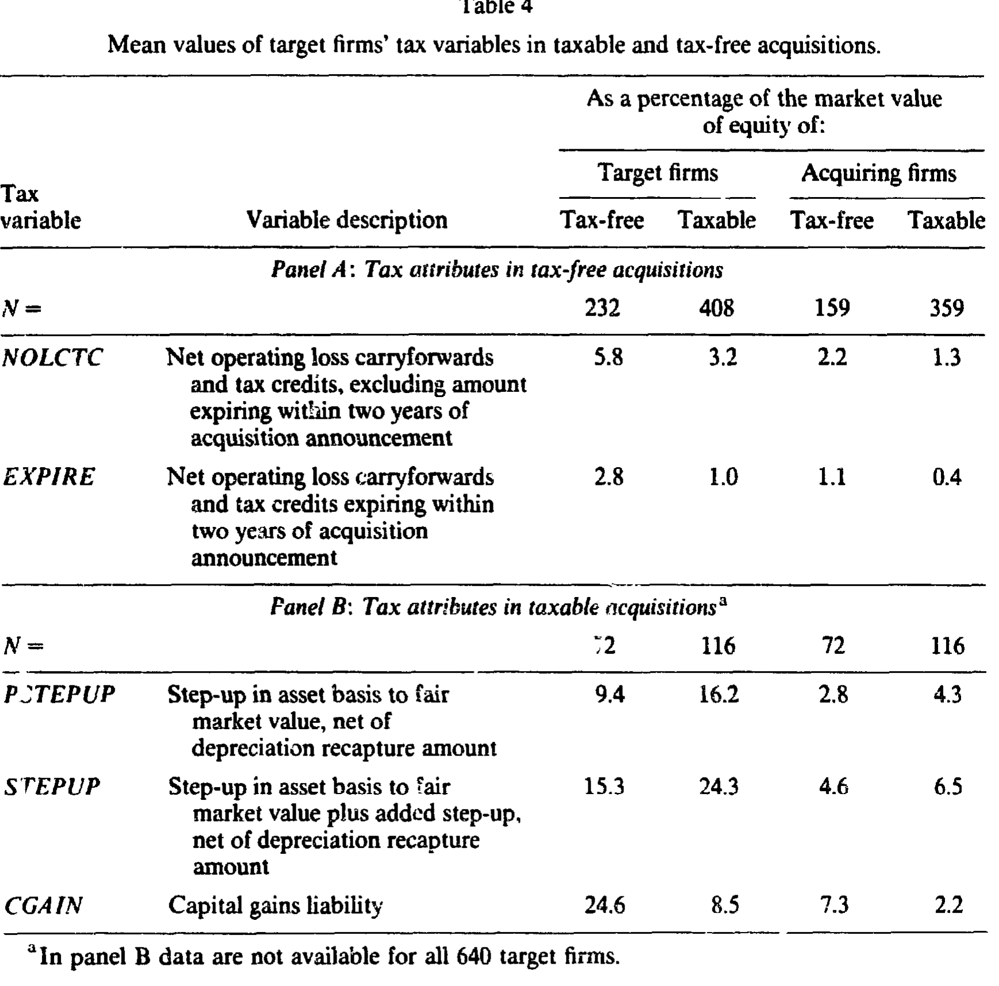
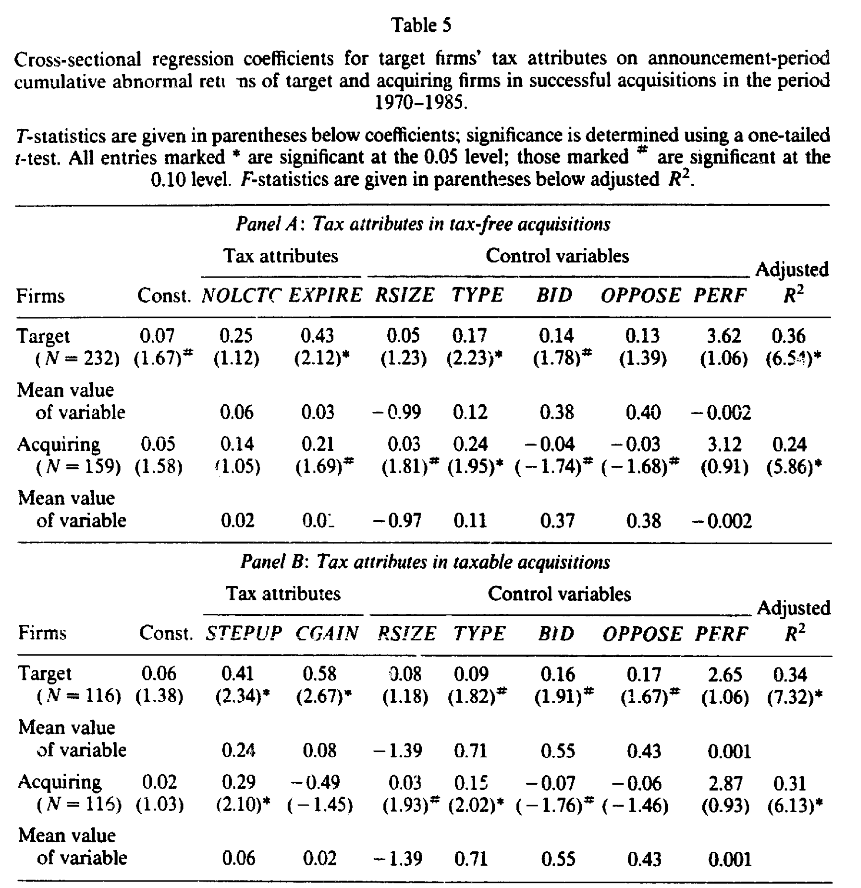
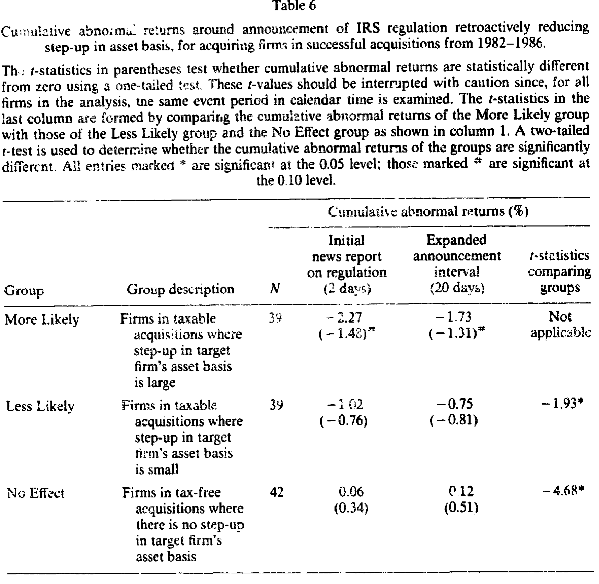
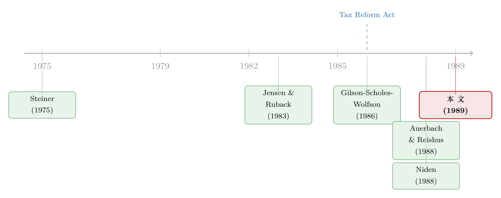

并购的真正诱因，藏在目标公司的税表里
本文读的是 Hayn (1989, Journal of Financial Economics)：把一桩并购拆开看，目标公司的「税收属性」——免税收购里那笔快到期的净营业亏损结转、应税收购里那笔资产基础的「垫高」——能显著解释收购宣告时目标方与收购方双方股东的异常收益；更进一步，能不能拿到「免税」身份，甚至左右了一笔交易最终成不成。换句话说，税，不只是并购的副产品，它本身就是并购的诱因。
1 一个老问题，和一个被忽略的答案
并购为什么能创造价值？这是公司金融里最经久不衰的问题之一。八十年代积累下来的事件研究已经把第一层答案钉死了：收购确实给目标公司股东带来了可观的财富，宣告期溢价动辄两三成；收购方股东也沾光，只是分到的那一份小得多（公告期异常收益大约 0.8% 到 1.5%）。
可是，钱从哪儿来？
有人说是经营协同，有人说是管理层纪律，还有人说——是税。早在 Steiner (1975)、Weston and Chung (1983) 就提出，并购的一部分收益来自税收上的好处；最常被念叨的，是那块「不收购就用不掉」的税盾（Brealey and Myers；Jensen and Ruback, 1983）。这是一个听上去很顺、却一直没被干净地量出来的说法。直觉很美：一家亏损连连、攒了一堆抵扣额度却没有利润去消化的公司，被一家赚钱的公司买下，那些原本要烂在账上的税收优惠，就被「激活」了。
但直觉归直觉。真正的麻烦在于：如果市场早就知道这家公司的税收属性值钱，那这部分价值应该早已被计入股价，等到收购宣告那天，就不该再有任何反应了。这正是本文要对付的核心张力——
税收属性的价值，到底是「早被资本化进了股价」，还是「要等收购宣告才兑现」？如果是前者，公告期收益就与税收属性无关；如果是后者，二者就该显著相关。本文检验的，正是这个零假设。
2 先把「税」讲清楚：两条岔路
要理解这篇文章，得先接受一个制度事实：一桩收购，对目标公司股东而言，可以是 应税的（taxable），也可以是 免税的（tax-free），而这条岔路决定了几乎所有后续的税收后果。
所谓「免税」其实是个误称（misnomer）——它不是真的免，而是递延：目标股东的资本利得不在成交当年确认，而是推迟到将来某次应税交易再算。IRS 默认一切收购都应税，除非满足一系列严苛条件（典型情形是收购方主要用有投票权的股票来换）。于是经验上出现了一个漂亮的对应：免税收购大多是协议合并（merger），应税收购大多是要约收购（tender offer）。
这条岔路把税收属性劈成了两组，方向恰好相反：
免税那条路，目标公司的两样东西会原封不动地转移给收购方，从而压低后者的税负： - 净营业亏损结转 (net operating loss carryforwards, NOLC)； - 未用完的投资税收抵免与外国税收抵免 (unused investment and foreign tax credits)。
应税那条路，关键反而是资产基础的垫高（step-up）：收购方按它实际付出的价格，把买来的可折旧资产重新登记入账。价格高于资产在目标公司账面上的未折旧余额，这块差额就成了将来更大的折旧抵扣。与之相伴的还有两笔成本——折旧追回税 (depreciation recapture tax)，以及压在目标股东头上的资本利得税 (capital gains tax)。
一个值得停下来玩味的细节：step-up 不止能「垫高」，还能「超垫」。在所谓二级分配法 (second-tier allocation method) 下，收购方可以把超过公允价值的金额也塞进可折旧资产，作者称之为 added step-up。一份对 35 桩收购的初步考察发现，收购方分配给被收购资产的金额，平均比公允价值高出了 18%；35 桩里有 31 桩存在这种高估。这不是个小数目，它后面会变成全文最干净的一次自然实验。
3 识别策略：四张表，一个零假设
方法本身是教科书式的，但用法很讲究。
第一步，事件研究 (event study)。把样本按「税收状态 × 要约类型」分组，算宣告期的累计异常收益 (cumulative abnormal returns, CAR)。宣告期定义为相对宣告日（第 0 天）的 第 −9 天到第 +5 天 这 15 个交易日；宣告日则取《华尔街日报》首次点名收购方的那天。一个支持「这确实是宣告效应」的旁证是：样本里只有 3% 的公司在宣告窗口之外还有统计显著的异常收益。
接着，一个自然的问题是：这些异常收益，是不是被税收属性驱动的？于是有了第二步——横截面回归。把 CAR 作被解释变量，税收变量加若干非税控制变量作解释变量。由于免税/应税、目标/收购方各有不同的假设，作者跑了四组回归，每一组对应一个「税收状态 × 公司身份」的格子：
$$ \mathrm{CAR}_i \;=\; \alpha \;+\; \beta\,\mathrm{Tax}_i \;+\; \gamma\,\mathrm{Controls}_i \;+\; \varepsilon_i $$
这里有一处容易被忽略、却很关键的处理：所有税收自变量都除以被考察公司的股权市值来标准化——市值取宣告前 40 个交易日的股价乘以流通股数。这样一来，每个变量度量的是「每一美元股权所对应的税收属性」，免得大公司天然显得「税收属性更大」。NOLC 这类变量还要先乘以当年法定企业所得税率，换算成真正的税收效应。step-up 则被拆成三个部件（公允价值减原账面基础、added step-up、折旧追回），前两者是收益、后者是成本，组合出 PSTEPUP 与 STEPUP 两个口径。
把这四组回归读下来，结论是一致的、也是符合预期的：
- 免税收购里，目标与收购方的公告期收益，与目标公司的 NOLC、尤其是短期内（两年内）即将到期的那部分抵扣额度，显著正相关。为什么偏偏是「快到期」的那部分最值钱？因为期限越短，市场事前越不相信公司能靠自己的利润把它用掉，于是越没被提前计入股价；而且税盾现值的大头本就来自头几年。

Table 4
- 应税收购里，资产基础的 step-up 与目标、收购方双方的公告期收益都显著正相关；折旧追回税则方向相反，为负；目标股东的资本利得税负，与目标方收益正相关（更高的溢价来补偿这笔即时税单）。

Table 5
然后，这两步合在一起，已经能反驳那个零假设了：如果税收属性早被完全资本化，公告期就不该有这些显著关系。它们之所以还「漏」在宣告期里，作者给的解释很朴素——市场并不擅长事前识别谁会被收购（Palepu, 1986 早就指出，靠公开信息根本认不出收购目标），更别说事前判断这桩收购到底会走免税还是应税那条路。不确定性没有消化掉的那部分价值，只能等宣告时才释放。
4 但真正关键的一步，是那次「追溯」
到这里，文章其实已经成立了。但横截面回归总有个挥之不去的担忧：会不会是某个没控制住的东西，同时驱动了税收属性和收益？
于是真正关键的一步出现了：作者找到了一个近乎实验的设定。IRS 出过一条规则，追溯性地削减 added step-up 带来的好处，适用于 1982 年 8 月 31 日到 1986 年 1 月 31 日之间发生的收购。注意这个「追溯」二字——这些交易当年是基于旧规则定的价，规则一改，那些靠超额垫高资产、多抵折旧的收购方，将被迫吐回好处。
如果 added step-up 真的值钱，那么最可能受伤的那批收购方，应该在规则消息公布时出现负的异常收益。作者据此把收购方分三组：按 added step-up 的大小取中位数，分成「更可能受损（More Likely）」与「较少可能受损（Less Likely）」，再加一组完全不受规则影响的免税收购方作对照（「No Effect」）。
结果干净得令人安心（如表 6 所示）：
- 围绕首次新闻报道的两天窗口，More Likely 组的累计异常收益是
−2.27%；Less Likely 组是−1.02%；No Effect 组几乎为零（0.06%）。 - More Likely 组在这两天的平均异常收益，显著低于另外两组——它与 Less Likely 组、No Effect 组相比的 t 值分别约为
−1.93和−4.68（后者在0.05水平显著）。 - 把窗口拉长到 20 天，同样的次序依然成立。

Table 6
这正是横截面回归说不清、而这个准实验能说清的：受 step-up 好处影响越大的公司，损失越惨。两条互相独立的证据，指向同一个故事。
5 反转：税，不只是定价，还决定「成不成」
如果文章只到这儿，它讲的还是「税收属性如何被定价」。于是反转出现了——作者把镜头从「价格」移到了「行为」：税，能不能左右一桩收购到底成不成？
机制来自又一个制度细节。收购方在公开宣布要做一桩免税收购后，常常会向 IRS 申请一份关于税收状态的裁定（ruling）。裁定给的是「大概率免税」的一种保障，但不绝对。作者据此把申请了裁定的公司（Ruling 组）与没申请的（No Ruling 组，为可比性只保留合并交易）分开，再把 Ruling 组按拿到的是有利裁定还是不利裁定细分。
逻辑链条是这样的：如果免税身份要紧，那么拿到不利裁定的公司应在裁定日附近出现负收益；而且——这是最有说服力的一句——拿到不利裁定的收购，被中止的比例，应该高于拿到有利裁定的。如果税收身份真的能决定交易的生死，这个差异就会出现。文章正是用这套设计，把「税收动机驱动并购」这个原本只能靠收益间接推断的命题，落到了「完成率」这个硬邦邦的结果变量上。
至此，全文围绕的那一个核心也就讲透了：目标公司的税收属性，既被市场在宣告时定价，又实实在在地影响着收购能否达成。税不是并购的注脚，它是并购的一条主线。
（关于「税」如何贯穿整个公司金融的决策链，可参见《100% 借债，还是一分不借？——一篇综述，把「税」拧成公司金融的一根主线》；而税盾的价值为何并不等于税盾的现值，则见《税盾的价值，并不等于税盾的现值》。）
6 文献脉络
把这条线索捋一捋。最早，是 Steiner (1975)、Weston and Chung (1983) 这批人提出「并购收益里有一块来自税」的猜想；Jensen and Ruback (1983) 在那篇著名的综述里，把「用不掉的税盾」列为最常被讨论的税收协同。接着，理论上的推进来自 Gilson, Scholes and Wolfson (1986)——他们论证，在有交易成本和信息成本的真实世界里，并购可能恰恰是获取税收好处最划算的途径。
然后，实证开始向「税」逼近。Auerbach and Reishus (1988a) 用模拟的办法，估算合并双方的联合税收后果，去识别税收动机；Robinson (1981)、Niden (1988) 检验溢价与各种税收变量的关系；Niden (1988) 与 Crawford (1986) 则试图反过来用双方的税收属性去预测一桩收购会被定成什么税收状态。1986 年的税改法案 (Tax Reform Act of 1986) 废掉了 added step-up 那条法门，本身也成了这条脉络上的一个分水岭事件。

本文所处的位置，是把前人零散的努力收拢成一个完整的检验：它不依赖溢价、而是用独立于公告收益的证据（那次 IRS 追溯规则）来佐证税收的重要性；它认真讨论了哪些税收好处「非经收购不能实现」；它控制了可能搅局的非税变量；它还第一次把目标公司的税收属性与收购方的收益挂上了钩。
7 评论与延伸（Q&A + 研究方向）
(a) 几个可能的疑问
Q：既然市场会把税收属性提前计入股价，为什么公告期还能测到反应？这不矛盾吗？
不矛盾，关键在「不确定性」。市场事前既认不准谁会被收购（Palepu, 1986），也猜不准这桩收购会走免税还是应税。没被提前消化掉的那部分价值，自然要等宣告时才释放。作者也强调，正因如此，公告期收益尤其与「短期内即将到期」的 NOLC 相关——那部分最不可能被事前资本化。
Q：横截面回归里，税收变量会不会只是替别的东西「背锅」？
这正是最该担心的。作者的回应有两手：一是在回归里加入非税控制变量；二是——更有说服力的——那次 IRS 追溯规则的准实验。后者不依赖任何横截面相关，而是看「最该受伤的公司是不是真的跌得最多」，给出了一个相对干净的因果旁证。
Q：免税 = 协议合并、应税 = 要约收购，这个对应靠谱吗？
它是经验规律，不是恒等式。免税通常要求收购方主要用有投票权的股票来换，这与协议合并的形式天然契合；要约收购多用现金，故多为应税。但作者也明确把「部分应税」的情形排除在外，正是因为这种对应并非铁律。
Q：为什么 added step-up 这个看似边角的变量，反而成了全文最硬的证据？
因为 1986 年前后那条追溯削减规则，恰好提供了一次外生冲击：规则改变与公司基本面无关，却精准地打击了「超垫」程度高的收购方。
−2.27%对−1.02%对≈0的次序，几乎是为这个假设量身定制的。
Q：收购方分到的那点收益，真能归功于目标公司的税收属性吗？
这是本文相对前人的一个增量。作者发现，应税收购中目标资产的 step-up，与收购方收益也显著正相关。当然，税收好处在双方之间怎么分，取决于相对议价能力——文章对此只能定性讨论，无法精确拆分。
Q：这些结论今天还成立吗？
要打个折扣。1986 年的税改法案废除了 General Utilities 原则、限制了二级分配法、并取消了资本利得的差别税率——本文赖以成立的好几条制度通道，此后都变了。所以它更应被读作「特定税制下的一份证据」，而非放之四海皆准的规律。
(b) 几个可能的研究问题与提案
1. 税收驱动并购的「信用市场」版本
- 【经济故事】本文盯的是股权收益。但目标公司的 NOLC、step-up 同样改变合并实体的税后现金流，从而影响其偿债能力与信用利差。一桩「税收协同」明显的收购，债权人是否也该在债券价格上有所反应？
- 【可行性】中。需把并购样本匹配到 TRACE 公司债成交与评级数据，做债券层面的事件研究。识别上可借鉴本文思路，用税制改革（如 TCJA 2017 对利息抵扣与折旧的修改）作外生冲击。难点是同期发债且有流动成交的目标/收购方样本偏少。
2. 外资收购中的「税收套利」
- 【经济故事】跨境收购里，收购方所在国与美国税制的差异，可能让某些税收属性对外资买家格外值钱（或一文不值）。「谁出价更高」是否部分由税收属性的跨境可转移性决定？
- 【可行性】中。需跨境并购数据（如 SDC）匹配双方国别税制参数。识别可利用双边税收协定的签订/修订作为时间冲击。诚实地说，把「税收动机」从「行业协同」「监管套利」里干净剥离出来并不容易。
3. 用机器可读税表重估「快到期 NOLC」溢价
- 【经济故事】本文用「两年内到期」作为短期 NOLC 的近似。如今 Compustat 与 10-K 的递延税附注能更细地还原 NOLC 的到期结构。到期时点越临近，被收购概率与并购溢价是否真的越高？
- 【可行性】高。数据现成，识别用断点式的到期临界（如 NOLC 还剩 1 年 vs 3 年到期）做横截面比较即可。是本文最容易被现代数据「复刻并加强」的一条。
4. 税收属性与收购完成率的再检验
- 【经济故事】本文已暗示，免税身份左右交易的生死。把「完成 / 中止」当结果变量，用更大样本和现代税制变量重做一遍，能直接检验「税收动机」的强度，而不必绕道收益。
- 【可行性】高。SDC 有完整的交易状态与结构信息，跑一个完成率的离散选择模型即可，识别可借助税改前后的对比。
8 我的判断
这篇文章的贡献，在于它没有停在「税收属性与收益相关」这一步。真正出彩的，是它用一次 IRS 追溯规则，把横截面相关变成了一个有方向、有对照组的准实验——−2.27% / −1.02% / ≈0 这个次序，比任何一组回归系数都更让人信服；又用「裁定—完成率」的设计，把命题从「定价」推进到「行为」。在 1989 年，这是相当现代的识别意识。
但担忧也实在。其一，横截面回归那部分的因果性始终薄弱，真正扛住识别的其实是那两个准实验，而它们样本都不大（受影响组 35–39 家）、用的又是同一段日历时间的事件窗，t 值需谨慎解读，作者自己也提醒了这一点。其二，几个关键变量是估算出来的——公允价值用价格水平调整后的成本代理、加速折旧靠 10 年寿命假设倒推——测量误差很可能压低了系数、放大了噪声。其三，整套结论深深嵌在 1986 年税改之前的制度里，外推到今天要格外小心。
我接下来最想看到的，是把那条「裁定—完成率」的逻辑做实：到底拿到不利裁定的收购，被中止的比例高出多少？这是全文最有冲击力、却在我手头材料里只给了设计、没给最终数字的一环。如果那个差距足够大，那么「税收不是并购的副产品、而是诱因」这句话，就不只是被收益间接支持，而是被交易的生死直接盖了章。
参考文献
- Auerbach, A. J., and D. Reishus (1988). The effects of taxation on the merger decision. In A. J. Auerbach (ed.), Corporate Takeovers: Causes and Consequences. University of Chicago Press.
- Crawford, D. (1986). The Structure of Corporate Mergers: Accounting, Tax and Form-of-Payment Choices. Working paper.
- Gilson, R. S., M. S. Scholes, and M. A. Wolfson (1986). Taxation and the dynamics of corporate control. In J. Coffee et al. (eds.), Takeovers and Contests for Corporate Control. Oxford University Press.
- Hayn, C. (1989). Tax attributes as determinants of shareholder gains in corporate acquisitions. Journal of Financial Economics 23(1), 121–153.
- Jensen, M. C., and R. S. Ruback (1983). The market for corporate control: The scientific evidence. Journal of Financial Economics 11(1–4), 5–50.
- Niden, C. (1988). An Empirical Examination of White Knight Corporate Takeovers: Synergy and Overbidding. Working paper, University of Chicago.
- Palepu, K. G. (1986). Predicting takeover targets: A methodological and empirical analysis. Journal of Accounting and Economics 8(1), 3–35.
- Poterba, J. M. (1987). How burdensome are capital gains taxes? Evidence from the United States. Journal of Public Economics 33(2), 157–172.
- Steiner, P. O. (1975). Mergers: Motives, Effects, Policies. University of Michigan Press.
- Weston, J. F., and K. S. Chung (1983). Do mergers make money? Mergers and Acquisitions 18, 40–48.